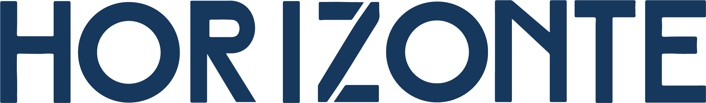
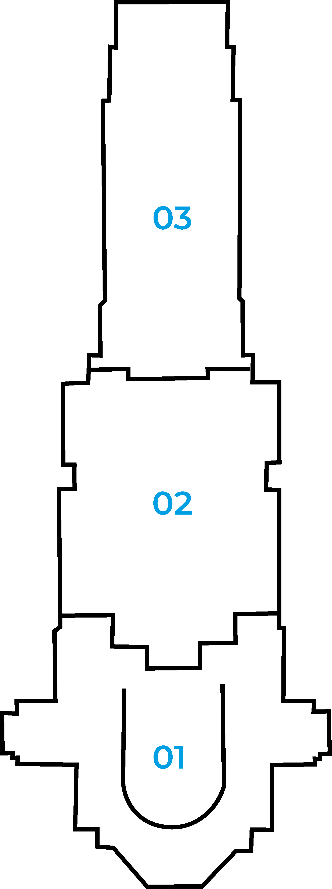
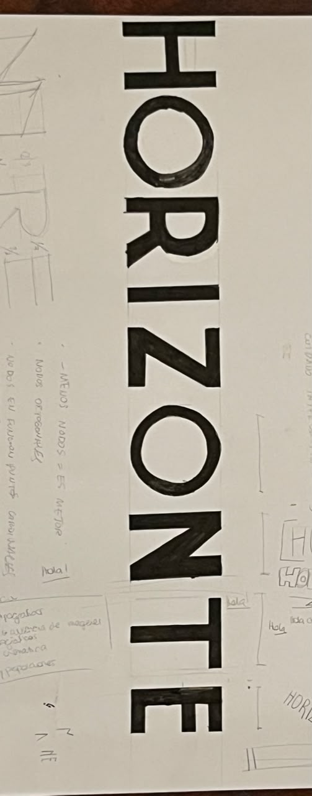
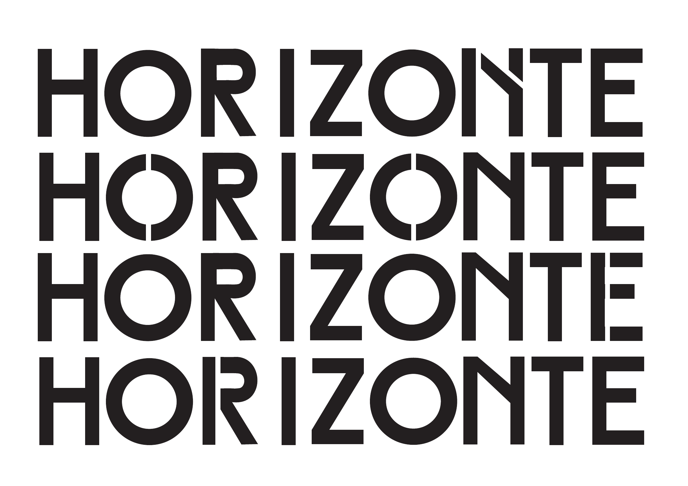

01
01La Proa
y la Torre
El sector que mira al río reúne la Gesta de Mayo, la memoria de Belgrano y una visión simbólica del territorio argentino.
Explorar ↗
Cómo llegar ↗ROSARIO · ARGENTINA
Un símbolo que se visita, se aprende y se vive en comunidad. Descubrí el lugar donde la bandera argentina se convirtió en memoria compartida.
EL ORIGEN DE UN SÍMBOLO
Es la obra más emblemática de Rosario. Está a pasos del río y se conecta al casco histórico a través del Pasaje Juramento, ocupando el sitio donde en 1812 Manuel Belgrano izó por primera vez la bandera argentina.
Desde fines del siglo XIX, comenzó a proyectarse la construcción de un monumento que rindiera homenaje al espíritu de independencia y de libertad enarbolado por el General Belgrano al darle su nueva enseñanza a la incipiente nación.
Es en ese mismo relieve de barrancas aplanadas, pobladas de palos borrachos, jacarandás y ceibos, donde el 20 de junio de 1957 fue inaugurado el Monumento Nacional a la Bandera, obra del arquitecto e ingeniero Àngel Guido.
Hoy es escenario de los actos centrales del Día de la Bandera, de ceremonias escolares y de visitas de todo el país: un espacio donde la historia se encuentra con la vida cotidiana de la ciudad.

UN RECORRIDO EN TRES PARTES
Seguí el eje principal para comprender cómo cada espacio representa una etapa de la organización nacional.
01El sector que mira al río reúne la Gesta de Mayo, la memoria de Belgrano y una visión simbólica del territorio argentino.
Explorar ↗ 02
02La gran escalinata conecta la Proa con el Propileo y representa el esfuerzo colectivo que condujo a la organización nacional.
Explorar ↗ 03
03Inspirado en los templos clásicos, simboliza a la Nación jurídicamente organizada por la Constitución de 1853.
Explorar ↗EL MAPA
Pasá el mouse por cada sector del mapa para conocer su significado.

DEL PRIMER IZAMIENTO A UN SÍMBOLO NACIONAL
Seis momentos que cuentan cómo el sitio del primer izamiento se convirtió en un símbolo para Rosario y todo el país.
El 27 de febrero, Belgrano izó por primera vez la Bandera Argentina junto a las baterías Libertad e Independencia, a orillas del Paraná.
Nicolás Grondona propuso construir dos pirámides conmemorativas a orillas del río. Aunque no se concretó, inició la búsqueda de un monumento.
Para el Centenario, Lola Mora proyectó un conjunto escultórico que no llegó a emplazarse. Algunas obras se integraron luego al Pasaje Juramento.
En una gran movilización ciudadana se colocó la piedra fundamental, reafirmando el propósito de conmemorar el primer izamiento.
Tras catorce años de construcción, el Monumento fue inaugurado el 20 de junio ante una multitud que celebró este símbolo nacional.
Sigue siendo sede de los actos del Día de la Bandera, de promesas de lealtad y de encuentros ciudadanos durante todo el año.
DETRÁS DE LA TIPOGRAFÍA
HORIZONTE nació a partir de un trabajo de observación e investigación sobre las letras edilicias del Monumento Nacional a la Bandera, ubicado en la ciudad de Rosario. Desde el principio, nos interesó conocer un poco más sobre su arquitectura, su historia y, especialmente, las formas de las letras que forman parte de este espacio tan importante para nuestra ciudad.
Durante el recorrido, nos llamó la atención la relación que tiene el Monumento con las Islas Malvinas, ya que es un lugar que representa nuestra historia, la memoria y la soberanía argentina. A partir de esto, comenzamos a pensar cómo podíamos transmitir esos valores a través de una propuesta tipográfica, sin perder la esencia de las letras originales.
Así surgió el nombre HORIZONTE, inspirado en la relación entre el río Paraná, el cielo y esa línea que parece unirlos a lo lejos. También lo relacionamos con las Islas Malvinas, porque el horizonte nos invita a mirar más allá, a recordar nuestra historia y a mantener presente aquello que forma parte de nuestra identidad como país.
Para desarrollar nuestra tipografía, tomamos como referencia las formas geométricas, las proporciones y los detalles de las letras edilicias. A partir de diferentes bocetos, pruebas y exploraciones, fuimos construyendo una nueva propuesta que combina características de la arquitectura del Monumento con una mirada más actual.
Nuestra intención no fue simplemente copiar las letras originales, sino reinterpretarlas y darles una nueva identidad, respetando su historia y su significado. Buscamos que cada letra mantuviera esa sensación de firmeza, estructura y presencia que transmite el Monumento.
ANTES DE LLEGAR AL NOMBRE
Seis nombres navegaron hasta acá. Pasá el mouse (o tocá) por cada uno para ver qué decía y por qué lo soltamos.
✓ EL NOMBRE ELEGIDO
Relaciona el Monumento con el río Paraná y con una idea de futuro, identidad y encuentro. Fue la que elegimos.
ANTES DE LA VERSIÓN FINAL
Antes de llegar a la tipografía definitiva, dibujamos las letras a mano sobre una grilla y probamos distintas variantes en digital: cortes, aperturas y cambios de peso para encontrar el equilibrio entre la firmeza del Monumento y una mirada más actual.

Primer dibujo de la palabra completa, con anotaciones al margen: «menos nodos = es mejor».

Lluvia de ideas de como podria ser el logo final
EL LOGO FINAL
El horizonte se mira mejor
estando ahí.
07 · PLANIFICÁ TU VISITA
Recorré sus espacios, descubrí sus historias y mirá Rosario desde otra perspectiva.